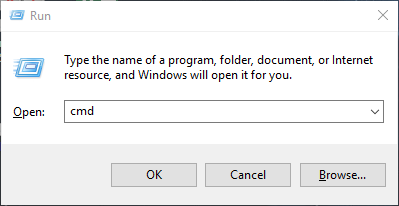
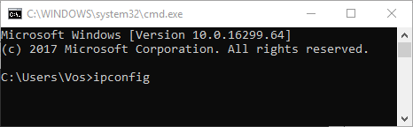
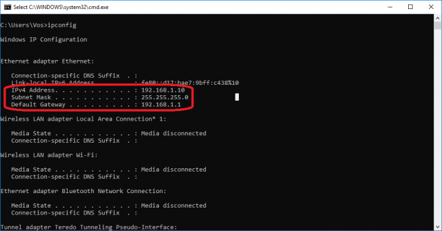
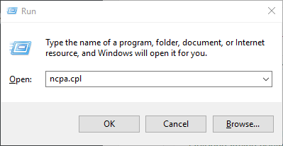
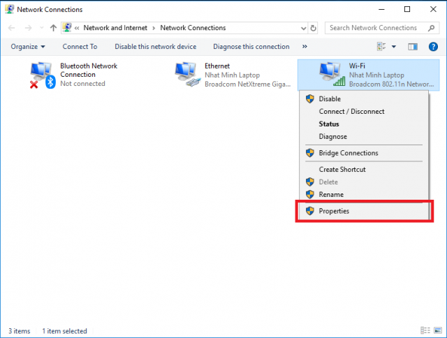
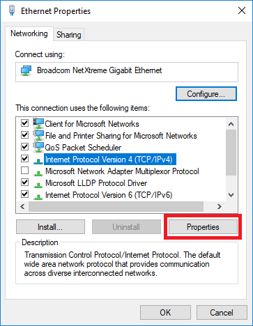
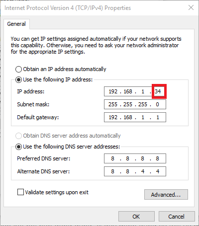

Khắc Phục Sự Cố WiFi bị chấm than
Lỗi này xảy ra khi xung đột (trùng) IP hoặc số lượng người kết nối Wifi nhiều dẫn tới mạng bị hạn chế (limited). Hãy thử những cách dưới đây để xử lý sự cố khi bạn gặp hiện tượng này.
1. Xung đột chương trình diệt virus AVG
Có thể do các bạn dùng một số chương trình diệt virus nên gặp phải hiện tượng này. Đây là cách khắc phục lỗi này khi dùng chương trình diệt virus AVG Internet Security 201x.
Bước 1: Mở Control Panel => Chọn Large icons (hoặc Small icons) ở mục View by ở góc trên bên phải
Bước 2: Mở Network and Sharing Center => vào Change Adapter Settings
Bước 3: Clicked chuột phải vào Local Area Connection
Bước 4: Bỏ tích ở mục AVG network Fillter driver
Bước 5: Click OK.
2. Khởi động lại thiết bị wifi : modem, router
Đầu tiên, bạn nên thử khởi động lại thiết bị wifi bằng cách tắt nút nguồn hoặc rút dây cắm nguồn. Đợi 1 đến 2 phút để bật hoặc cắm lại và kiểm tra thiết bị đã kết nối Internet được chưa. Nếu vẫn chưa kết nối được, hãy chắc chắn rằng lỗi wifi là do laptop của bạn, chứ không phải do lỗi router hay mạng bằng cách dùng thiết bị khác (VD: Điện thoại di động, laptop khác) kết nối vào mạng wifi của bạn để kiểm tra. Nếu thiết bị khác vẫn vào được mạng bằng wifi, hãy thử những cách tiếp theo.
3. Đặt IP tĩnh cho Laptop
Trước tiên để đổi IP, đặt IP tĩnh thì bạn kiểm tra một vài thông số của mạng và modem thiết bị kết nối. Đầu tiên mở hộp thoại Run bằng cách nhấn Windows (phím lá cờ) + R –> Gõ “cmd“
Nhấn Enter và gõ hoặc dán dòng lệnh sau
Ipconfig
Enter và chú ý phần thông tin trong khung đỏ. Hiện tại mình đang dùng mạng dây nên phần thông tin sẽ nằm dưới mục Ethernet adapter Ethernet, nếu dùng wifi sẽ nằm dưới mục Wireless LAN adapter Wifi. Bạn chỉ cần chú ý những thông tin trong khung đỏ, không nhất thiết phần thông tin phải nằm dưới mục Ethernet adapter Ethernet.
Dòng đầu tiên trong khung đỏ là IP hiện tại của bạn. Tiếp xem thông tin phần Default Gateway của bạn là gì, thông thường sẽ là: 192.168.1.1 hoặc 192.168.0.1
Tiếp theo, mở cửa sổ Network Connections bằng cách mở hộp thoại Run –> Gõ “ncpa.cpl” –> Nhấn Enter
Click chuột phải vào kết nối bạn đang dùng, ở đây mình dùng mạng wifi, chọn "Properties".
Tiếp tục chọn Internet Protocol Vesion 4(TCP/IPv4) –> chọn Properties.
Mặc định cài đặt sẽ là Obtain an IP address automatically. Bạn chọn mục Use the following IP address, thay đổi thông số như sau:
192.168.1.X
Click vào thông số sẽ tự điền
192.168.1.1
X nằm trong khoảng 2->254, trừ IP hiện tại của bạn
Nếu Default Gateway của bạn thì 192.168.0.1 thì thay số 1 thành số 0
Trong phần DNS các bạn có thể sử dụng DNS của Google như hình dưới
8.8.8.8
8.8.4.4
Nếu vẫn bị lỗi Limited Access, các bạn thử thay đổi X vài lần thành thông số ngẫu nhiên khác thử xem sao nha.
4. Cài lại driver Wifi cho Laptop
Lỗi Wifi bị chấm than vàng cũng có thể do driver Wifi trong máy tính bạn bị lỗi, bạn hãy cài đặt lại driver Wifi và kết nối lại xem thế nào.
7. Cấu hình lại thiết bị wifi
Nếu bạn đã làm hết những cách trên mà vẫn chưa khắc phục được lỗi wifi bị limit thì chứng tỏ thiết bị wifi bạn bị lỗi bạn phải cấu hình lại cho nó. Nếu chưa biết cấu hình wifi thì bạn nên nhờ gọi hỗ trợ kỹ thuật lắp đặt mạng để được trợ giúp kịp thời hoặc mang máy đến Trung Tâm để được hỗ trợ tốt nhất.


Nguồn cấp dữ liệu


Minh Khang
20/05/2023Bài viết hay đánh giá tốt
Trả lời